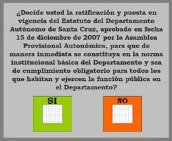

Referéndum
 De: La Frikipedia, la enciclopedia extremadamente seria.
De: La Frikipedia, la enciclopedia extremadamente seria.

|
La información contenida en este artículo es una mínima parte de su jugo total, así que ponte los guantes, saca el tupperwere y empieza a exprimir el tema. Si lo haces serás recompensado con una galleta en almíbar y algo más.
|
Proceso popular (es decir, del pueblo, no del PP, no confundamos términos) por el cual se hace fastidiar a la gente llana y se les enmarrona un domingo para que vayan a votar "Sí" o "No" sólo para aprobar o no una propuesta que los politiqueros han decidido que sería más divertido hacer decidir al pueblo qué se hace con ella. Normalmente no es usado excepto en casos de extrema necesidad, excepto en comisiones y por ello es conveniente realizar referéndums varias veces al año.
Etimología
Referendum (Referéndum en castenallo estricto) es un sustantivo que deriva del latín re (volver a) fer (hacer) en (en) dum (sinónimo de mano), es decir, traducido literalmente al valencianet apitxar: "tornar a fer la mà", que en idioma de Cervantes signífica "volver a tocar los huevos". Otras fuentes indican que viene del latín Referis (referencia) endum (dentro), es decir "referenciar a alguien o algo dento de una cabina", en referencia a lo que se hace en un referendum, cuyas votaciones se pueden realizar dentro de una cabina. De todas formas, el diccionario de la Real Academia de la Lengua conocida como Castenallo prefiere aceptar la primera definición.
Referéndums Famosos
 La papeleta debe tener un mensaje claro y conciso
- 1931 - República Española: no fue un verdadero referéndum, al menos el aprincipio, pero la gente escribió en las papeletas "Alfonso, vete para Italia que queremos probar qué se siente siendo republicanos" y el entonces rey de España hizo caso de las votaciones y cogió a su familia para después emigrar al país transalpino.
- 1985 - OTAN sí OTAN no: Todavía no se sabe exactamente para qué sirve esto de la OTAN, pero al final ganó el sí porque en algunos municipios españoles repartían bocadillos de chorizo después de votar por el sí.
- 1999 - Referendum por la Independencia de Almazora: El referendum fue un poco raro, porque no se votó por el clásico sistema de papeletas, sino que, como el Mariano, el amigo del alcalde, tenía un bar en el centro del municipio, se decidió realizar un proceso electoral alternativo, por el que se eligieron a dos representantes, uno para el sí y otro para el no, y cada votante le pagaba un carajillo al representante que decidía votar, y éste tenía que bebérselo para que el voto fuera válido. En dicha peculiar votación ganó el sí por sólo tres carajillos.
- 2005 - Constitución Europea. Como la OTAN, no se sabe para que sirve, pero la gente votó sí porque era gratis.
- 2006 - Referendum por el Estatut de Catalunya (al menos en los medios de comunicación es definido como tal). Fue adoptado por 5-0 (en vez de hacer votar, dijeron que decidía el resultado del partido Atlético de Vilafranca dels Grans Pebrots-Nou Club de Fútbol Sant Jordi de la Costa Tranquil.la, que ganó el primero por una "manita".
- 39576: Referendum por la independencia de Vascano. Éste referéndum suscitó tanta controversia que tardó más de 200 siglos en realizarse, debido a presiones desde los diferentes sectores de la política y de la andrología aplicada, puesto que el resultado parecía obvio a gran parte de la población, y ésta no quería ser preguntada. El Señor Espok pasó tres de sus setecientas diecinueve vidas y media insistiendo en hacer de Vascano un planeta libre asociado a España, con un plan que llevaba su mismo nombre y parecía infalible, pero la intervención de El tío del bigote que no debe ser nombrado y sus secuaces activistas frustró dicho plan. Se dice entre los sociólogos que la existencia del grupo pacifista ETA ha complicado sensiblemente la situación. Los resultados de dicho referéndum no se han dado a conocer, pues el seat panda del tiempo se nos escacharró en la A-3 y todavía no nos lo han arreglado en el taller. Fuentes cercanas a dicho planeta aseguran que logró la independencia, pero poco después el planeta fue invadido por el Imperio Lepero, contra el que no pudo luchar debido a su inferioridad numérica.
Autor(es):
- Krusher
- JacintoCanek
- Tropi
- Guilfer
- Yuri Kalashnikov
- Azulejos
- Cibercrank
- Dark temptation
Frikipedia 2005-2016, Licencia
GFDL 1.2 - Extraído por FrikiLeaks